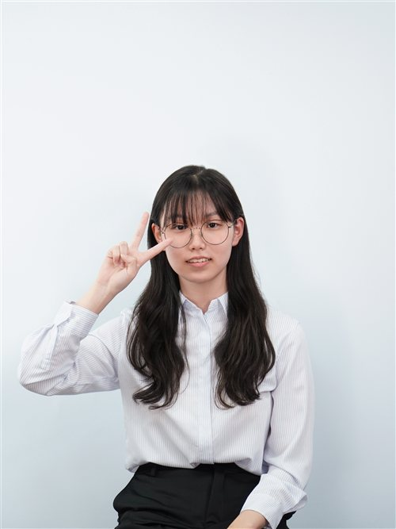
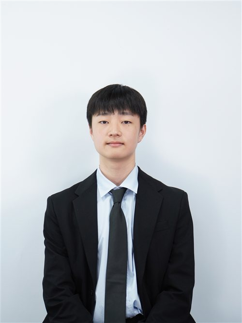

Honorable chairs, esteemed delegates, staff, and respected directors, I am Oh Sion, Head Chair of WHO(2) at KISMUN 2026, and it is a distinct privilege to welcome you as members of the committee.
I would like to begin by sharing a part of my own journey. I used to be quite introverted and standing in front of a big audience was genuinely intimidating. I often worried that I might make a mistake while speaking, so expressing my thoughts in front of others felt more difficult than it seemed to be for those around me. Since I began participating in Model United Nations later than many of my peers, I often doubted whether I could keep up and lacked confidence in myself. My perspective began to change when a senior member of the LDP shared a few words that encouraged me to trust my own potential. Those words gave me a reason to believe that I could improve, and from that point onward, I continued to place myself in unfamiliar situations even when I felt uncertain. Each experience taught me that confidence can be built when we choose to act despite our hesitation.
As I have learned through my own experience, every contribution carries its own significance. A single statement may encourage someone, inspire a new idea, or influence the direction of a discussion and shape how people engage with one another. This is what our conference slogan, "Value Your Voice, Voice Your Value," is intended to convey to others: the belief that each voice deserves a meaningful role in the conversation and should be expressed with sincerity and confidence.
I once found it difficult to deliver even a few sentences, but now I have the opportunity to serve as your Chair. As this will also be my first time chairing, I may be inexperienced in this role, but I will do my best to assist you throughout the conference and fulfill my responsibilities with dedication. I look forward to meeting each of you and witnessing the perspectives you will bring to WHO(2).
Best,
Sion Oh
Head Chair of WHO(2)
KISMUN 2026

Honorable delegates, staff members, and most respected directors, I am the Deputy Chair of WHO2, Kim Sunjung. It's my pleasure to serve as your chair and welcome to KISMUN 2026.
I've started my KISMUN journey at the UNDP committee, 2023. I was so afraid to even make a POI and so, have kept my hands down for the majority of the time. However, the Chairs helped me to gain courage. Looking back at that hesitant delegate in 2023, I never imagined I would one day stand before you as a Chair. That experience taught me that MUN is not about being a perfect speaker from day one, but about stepping out of your comfort zone, finding your voice, and growing through collaboration.
I believe that there will be some who will struggle, maybe even KISMUN 2026 being your start of a MUN adventure. Despite facing challenges, this will be the time for your growth and a chance to actually be entertained by.
I will be looking forward to a fruitful debate and I, as well, will try my best to make the debate as exciting and meaningful for all of you. See you all in KISMUN 2026!!
Best regards,
Sunjung Kim
Deputy Chair of World Health Organization(2)
KISMUN 2026